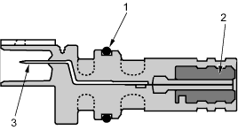
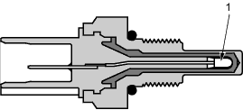
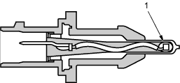

PGM-FI System
The Programmed Fuel Injection (PGM-FI) system is a sequential multiport fuel injection system.
Air Conditioning (A/C) Compressor Clutch Relay
When the ECM receives a demand for cooling from the A/C system, it delays the compressor from being energised, and enriches the mixture to assure smooth transition to the A/C mode.
Alternator Control
The alternator signals the Engine Control Module (ECM) during charging.
Barometric Pressure (BARO) Sensor
The BARO sensor is inside the ECM. It converts atmospheric pressure into a voltage signal that modifies the basic duration of the fuel injection discharge.
Crankshaft Position (CKP) Sensor
The CKP sensor detects engine speed and determines ignition timing and timing for fuel injection of each cylinder.

- O-RING
- MAGNET
- TERMINAL

Engine Coolant Temperature (ECT) Sensor
The ECT sensor is a temperature dependent resistor (thermistor). The resistor of the thermistor decreases as the engine coolant temperature increases.

- THERMISTOR
Ignition Timing Control
The ECM contains the memory for basic ignition timing at various engine speeds and manifold absolute pressure. It also adjusts the timing according to engine coolant temperature.
Injector Timing and Duration
The ECM contains the memory for basic discharge duration at various engine speeds and manifold pressures. The basic discharge duration, after being read out from the memory, is further modified by signals sent from various sensors to obtain the final discharge duration.
By monitoring long term fuel trim, the ECM detects long term malfunctions in the fuel system, and will set a Diagnostic Trouble Code (DTC).
Intake Air Temperature (IAT) Sensor
The IAT sensor is a temperature dependent resistor (thermistor). The resistance of the thermistor decreases as the intake air temperature increases.

- THERMISTOR